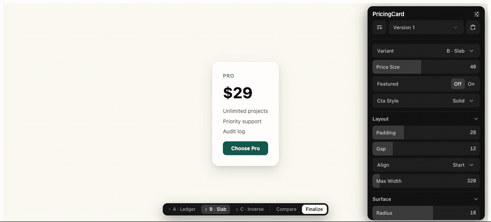

The configuration panel for AI-built UI
You ask for three takes on a component. Your agent builds three real variants in your running app, wired to a full control panel. You switch, compare, tweak, finalize — and the losers are pruned from your codebase.

Keys 1–9 switch variants. Compare renders every variant live. Finalize hands the decision to your agent.
The loop
- Ask for options. "three takes on the pricing card" — the agent scaffolds 2–4 self-contained variants plus one thin shell.
- Get a real panel. Archetype schemas give each element its actual configuration panel — layout, surface, typography, color, motion. 12–25 controls, not 3 sliders.
- Explore. Tabs or keys to switch. Compare mode shows all variants reacting to every tweak, live.
- Finalize. The decision — winner plus exactly what you changed — lands in
.variantkit/decisions/. No copy-paste. - Say "apply decision". Values inline as literals, winner becomes
index.tsx, losers and all tool wiring deleted. Zero residue. - It compounds. After 3+ decisions the agent distills
TASTE.md— your preferences, with numbers — and seeds better defaults next time.
Why this beats the alternatives
vs. asking the AI to build a switcher
That gets you an ad-hoc toggle with whatever controls it thought of, plus cleanup roulette afterwards. VariantKit is a contract: full archetype panels, one keyboard bar for every set, a schema'd decision file, a deterministic prune with a self-check.
vs. Storybook knobs
Storybook explores in isolation. VariantKit explores in your real app — real data, real layout, real neighbors — and removes itself completely when you decide.
Paramify anything
"Let me tweak this" wraps any existing component in its archetype panel — no variants needed. Finalize inlines your values and strips the wiring.
Built on DialKit
DialKit answers "what number should this be?" VariantKit answers "which direction should this go?" — using DialKit's documented store API. No fork, no patches.